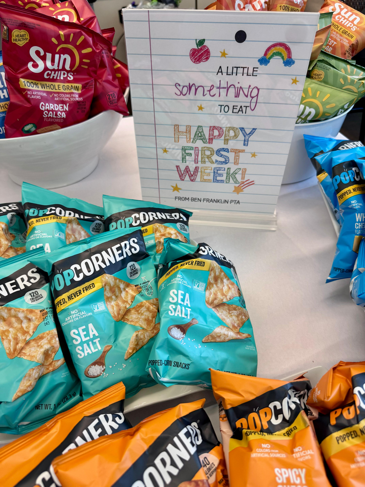
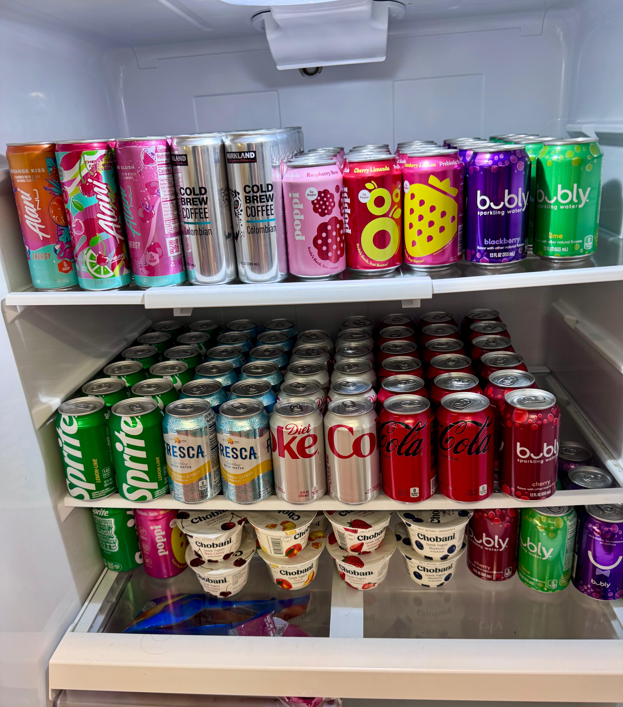
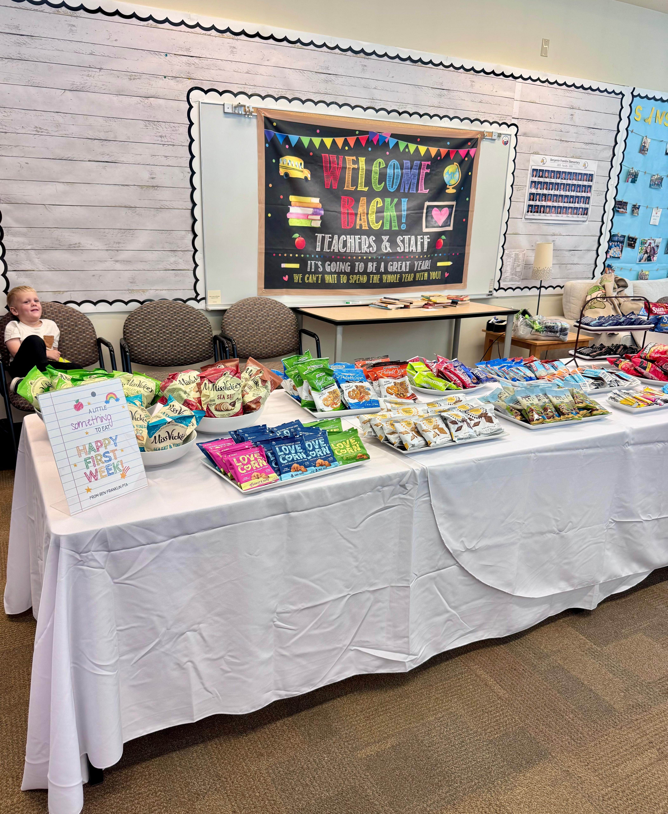
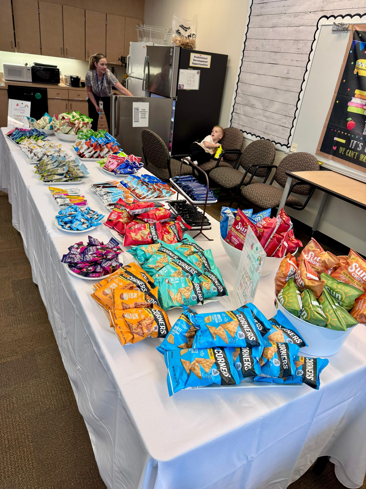
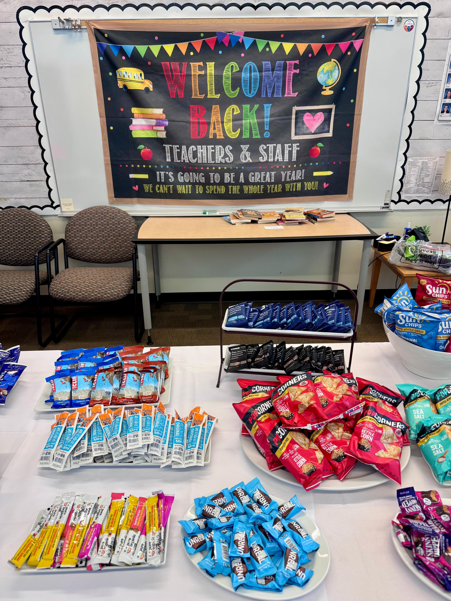

Welcome Back Teachers and Staff
At Ben Franklin Elementary, our teachers and staff aren't just educators — they're the heartbeat of our school community. They're the ones who greet our children with a smile every morning, who stay late to prepare lessons, who notice when a child is having a tough day, and who pour their hearts into making sure every student feels seen, supported, and inspired.
As parents, we see the impact of their dedication every single day — in the confidence our children bring home, in the excitement they have for learning, and in the sense of belonging they feel at school. And yet, too often, the people who give the most are the ones who are recognized the least.
That's why, as a PTA, we made a simple but intentional decision: before our teachers and staff poured into our kids on the first week of school, we wanted to pour into them first.




